A marketer who cares more about the why than the what.
PrerikaSingh
Scroll
01About me
Hi, I'm Prerika.
I've always cared more about the why than the what. I did my B.Com and recently completed my MBA from IIFT to go deeper into how businesses work across markets, which turned into a real interest in marketing and how brands connect with people. From a D2C beauty brand to an MNC like Maersk, I've worked across social media, B2B sales & operations and customer-experience strategy. It made me a well-rounded marketer.
✦ Get to know me
I feel for people : I'm empathetic.
I'm comfortable with ambiguity : new situations interest me, they don't intimidate me.
I take ownership : I care about the outcome and the learning.
I think in systems & to-do lists.
I move fast : without losing the details.
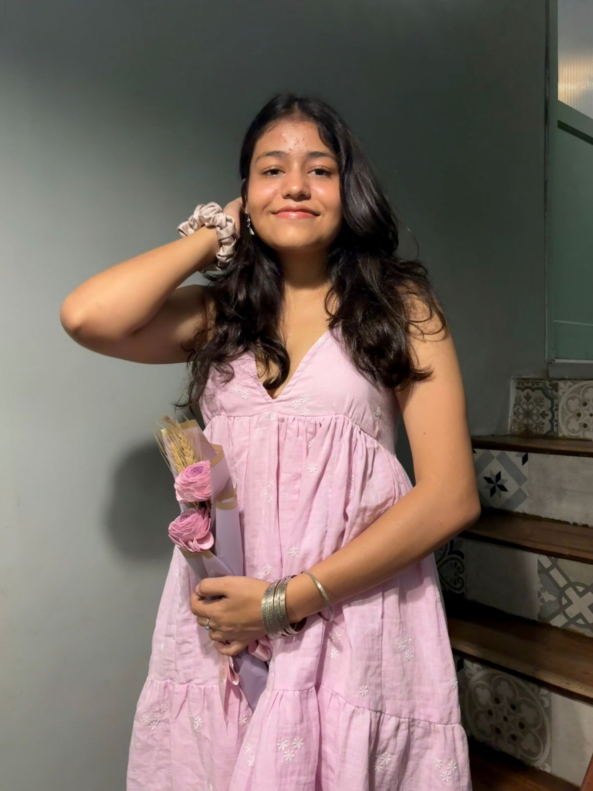
02Off the résumé
Fun facts
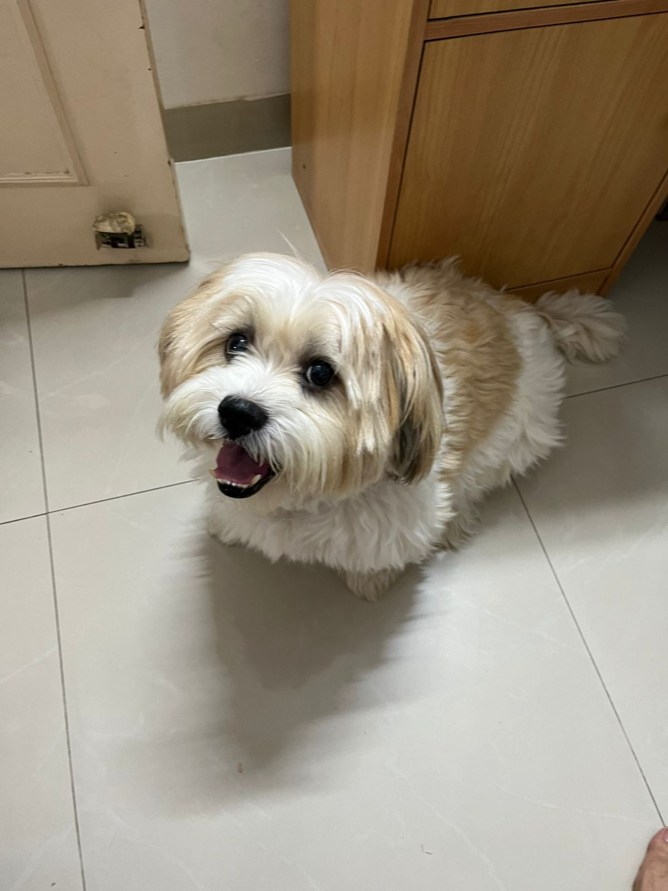
01
Meet Annie
hover →
01
Meet Annie
I love animals and convinced my parents to get a dog. It took 4 years and multiple pitches. Meet Annie, she was worth every pitch.
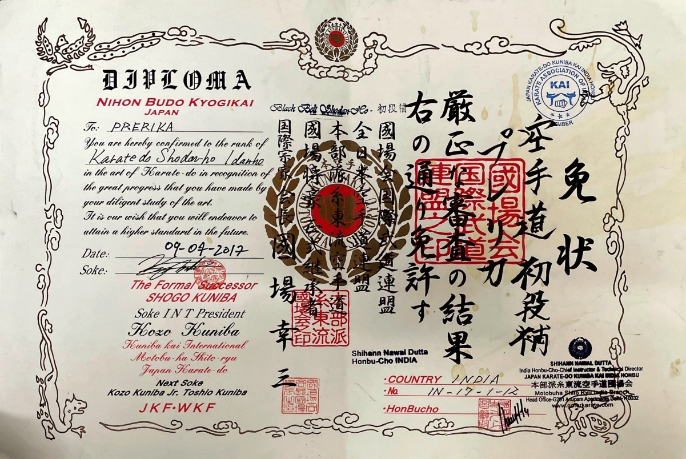
02
Black belt & cricket
hover →
02
Black belt & cricket
A black belt in karate and a district-level cricket player. The first taught me discipline and focus; the second, resilience and teamwork.
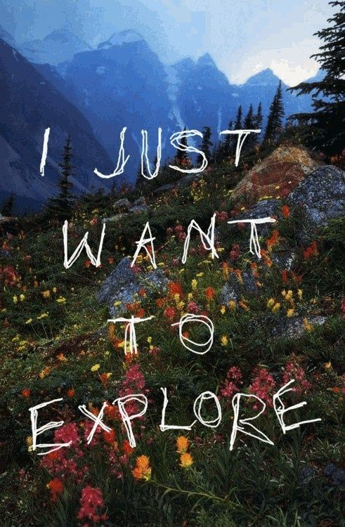
03
Forever curious
hover →
03
Forever curious
I have a thing for discovering new facts, places, music, ideas, etc. I used to bother my mom all day with questions as a kid. That habit hasn't really changed, I've just gotten better at Googling and using AI.
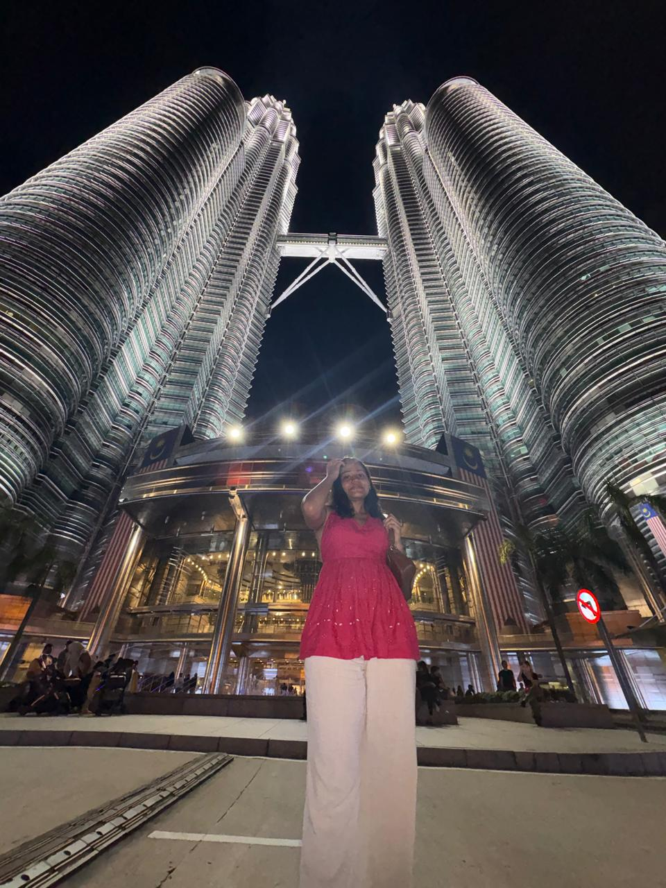
04
Many hobbies
hover →
04
Many hobbies
I refuse to stick to just one hobby. Dancing, journaling, playing badminton, watching shows in different languages, travelling. It keeps me sharp and interested in the world.
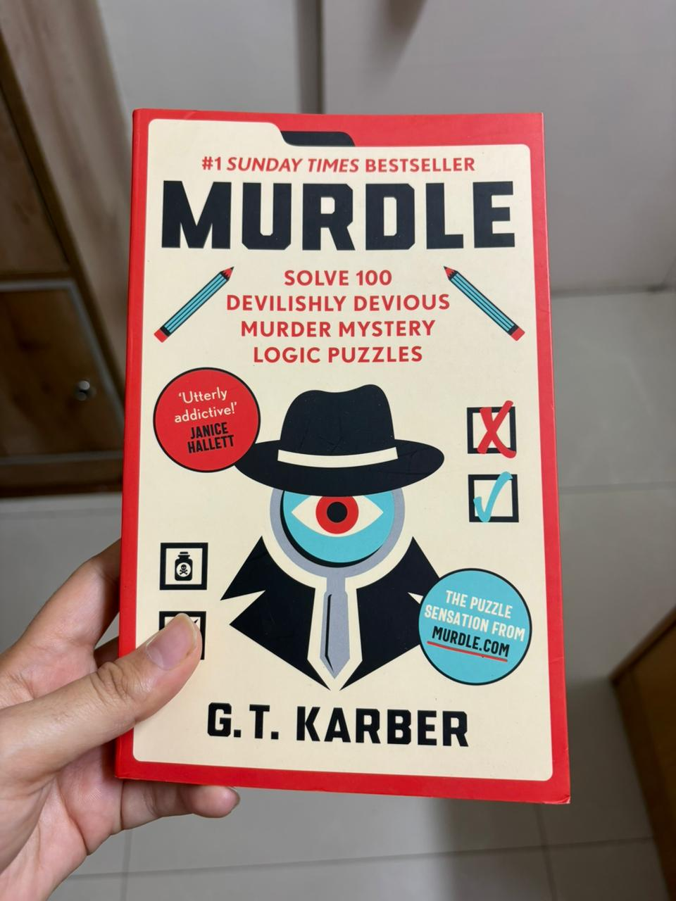
05
Puzzles for fun
hover →
05
Puzzles for fun
I love to solve puzzles like Rubik's cube, Wordle, Sudoku, crossword, etc. I enjoy spending time on a puzzle that doesn't make sense yet, and not leaving until it does.
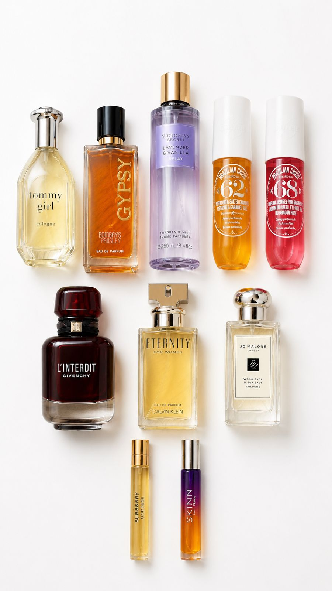
06
Perfume enthusiast
hover →
06
Perfume enthusiast
I have a soft spot for fragrances and love gradually building my perfume collection.
scroll to play · hover to flip
01
Meet Annie
4 years & many pitches to get a dog. She was worth every one.
02
Black belt & cricket
Discipline & focus from karate; resilience & teamwork from cricket.
03
Forever curious
Facts, places, music, ideas. I just want to explore.
04
Many hobbies
Dancing, journaling, badminton, new music, travelling.
05
Puzzles for fun
Rubik's, Wordle, Sudoku. Until it makes sense.
06
Perfume enthusiast
A soft spot for fragrances — slowly building my collection.
03Selected work
Projects
click a project to open ↗
04Certificates, Skills & Tools
Skills & tools.
Marketing & Strategy Skills
Content StrategyMarket ResearchSocial Media MarketingB2B Sales & Lead GenerationConsumer Behaviour AnalysisGTM StrategiesCampaign PlanningBrand ManagementDigital Marketing
Soft Skills
AmbitionProblem-Solving & Critical ThinkingTeamwork & CollaborationCommunicationOrganisation & Time Management
Tools
Canva
Instagram
Excel
PowerPoint
Power BI
LinkedIn
Notion
ChatGPT
Claude
Certificates
Microsoft Excel — Beginner to Advanced 2024 · UdemyBusiness Fundamentals: Marketing Strategy · UdemyThe Complete Digital Marketing Course (12-in-1) · Udemy
Most skincare brands sell you a transformation. Deconstruct sells you understanding.
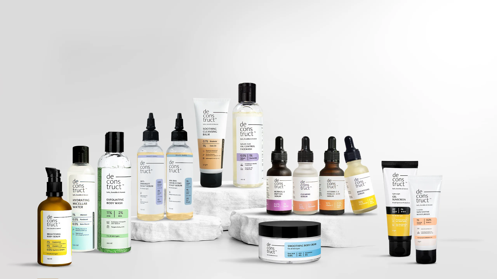
0
Growth in 2024, from January to December, while turning profitable
0
The revenue figure the brand is now eyeing
0
Views on campaigns, with strong engagement
01 — The brand
Make good skincare actually make sense.
Deconstruct was launched by Malini Adapureddy in 2020 with one very clear mission: make science-backed skincare actually accessible to real people. Not intimidating, not overpriced, not full of claims nobody can verify. Just honest, effective products built for Indian skin.
In 2024 alone the brand grew 10x from January to December and achieved profitability, which is rare for a D2C brand at this stage. They are now eyeing ₹500 crore. For a brand that started by simply telling people what's actually in their products, that's a remarkable place to be.
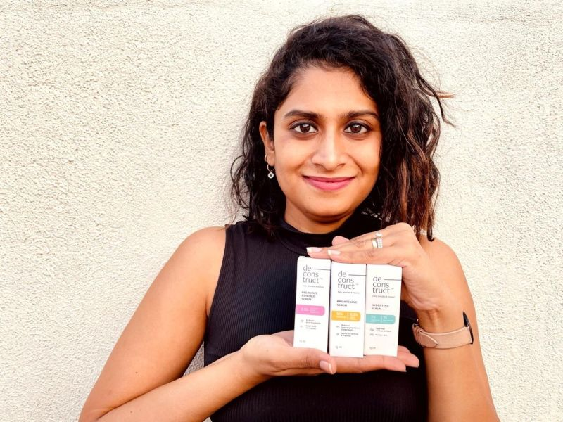
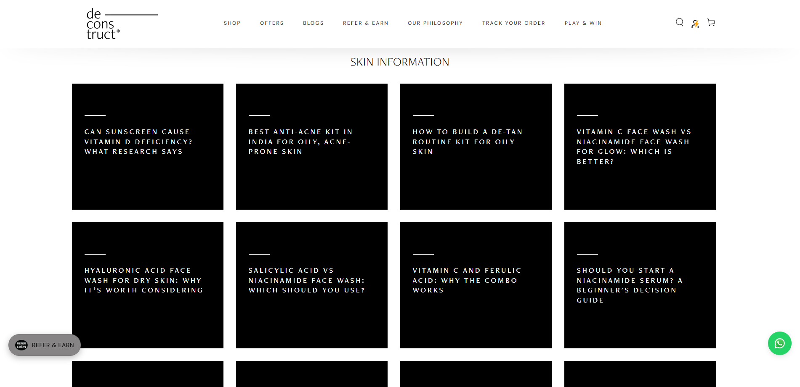
02 — What they're getting right
They chose education over hype.
The thing that genuinely impresses me about Deconstruct is that they chose education over hype at a time when every other skincare brand was doing the opposite. While competitors were throwing celebrities at problems and making miracle claims, Deconstruct was quietly explaining what Niacinamide actually does, and why you shouldn't layer certain actives together. That decision built something no marketing budget can manufacture: actual trust.
Their content doesn't talk down to their audience, and it doesn't overcomplicate things either. It sits right in that sweet spot where a complete beginner feels confident enough to start, and an ingredient-obsessed skincare nerd still finds it worth watching.
That is genuinely hard to do. Their influencer strategy reflects it too: they brief creators on technical content for bottom-funnel audiences, while using personality-led creators for awareness, which led to campaigns crossing 15 million views with strong engagement. It's not just pretty content. It's content that actually moves people through a purchase decision.
Their early entry into quick commerce, on Swiggy Instamart, Zepto and Blinkit, has contributed 10 to 15% of revenues, with 200% month-on-month growth in some channels. For a skincare brand, that's significant. It means when someone runs out of their serum on a Wednesday night, Deconstruct is the brand that shows up. That's not just distribution strategy. That's becoming a habit.
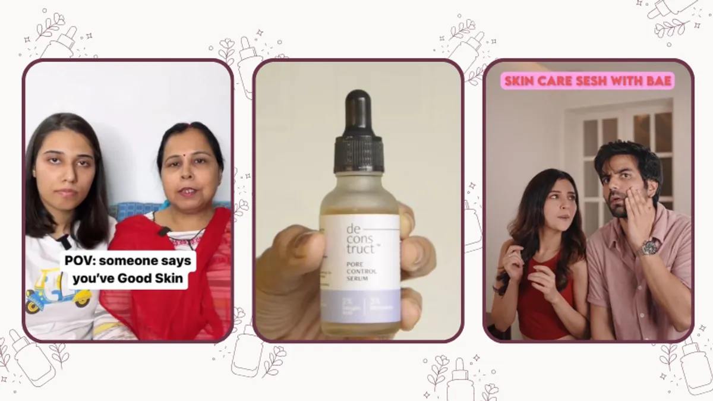
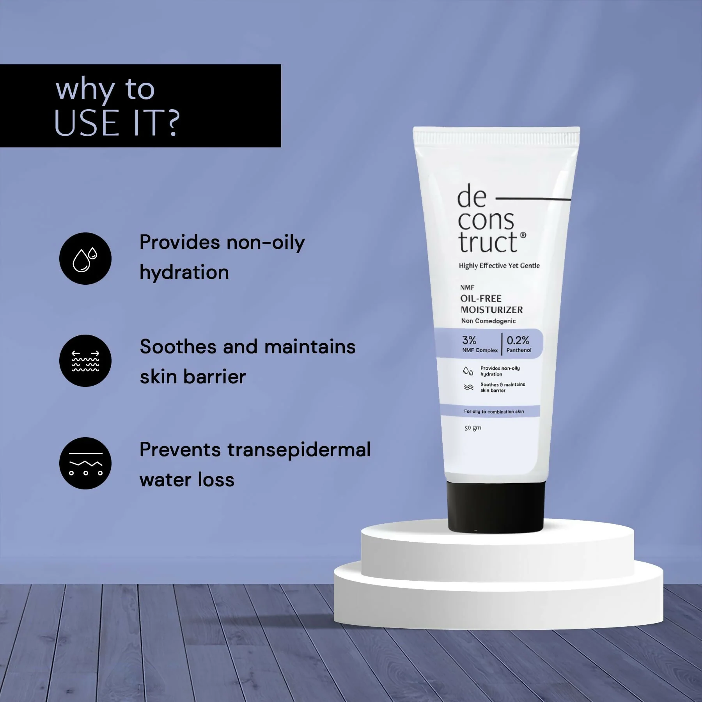
03 — What's unique
They sell understanding, not a transformation.
Most skincare brands sell you a transformation. Deconstruct sells you understanding, and that's a fundamentally different relationship with a customer. When you understand why a product works, you not only repurchase but you also become an advocate because you can actually explain it to someone else.
That word-of-mouth aspect is exactly why Deconstruct has grown the way it has without spending like a legacy brand. In a market where trends often overpower trust, they chose to build trust first, and the growth followed.
04 — A campaign idea
The idea
Unke Liye Bhi.
Deconstruct's Gen Z audience knows their ingredients, follows their routines, and genuinely cares about their skin. But there's someone at home who doesn't, and probably never will, unless their kid shows them.
Indian parents grew up in a time when skincare meant soap, or whatever cream was within reach at the nearest grocery store, and sometimes not even that. They have real skin concerns like uneven tone, pigmentation, sun damage and dullness, but nobody has ever spoken to them about how to treat any of it. They aren't going to find Deconstruct on their own, because they aren't willing to put in that effort for themselves. But their kids can bring it to them.
The campaign puts out content specifically designed to be shared with a parent. Not about young skin, but about theirs. The kind of thing a 22-year-old would genuinely forward to their family, saying "this is actually useful."
For execution, it stays true to how Deconstruct already communicates: short educational reels and simple carousels, but written for a parent, not just a Gen Z audience. The Gen Z kid is the bridge. They already trust the brand, and now they have a reason to pass that trust home. The content is designed to be saved and forwarded on Instagram & majorly WhatsApp, which is where Indian parents actually spend their time.
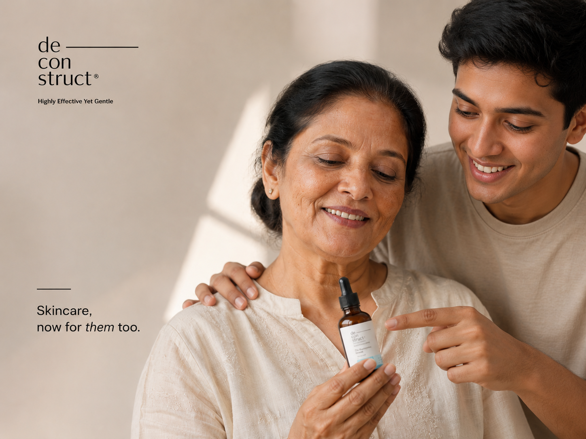
The bigger picture
Deconstruct figured out something most brands spend years trying to manufacture: if you genuinely help people understand something, they come back. Every piece of content they make is essentially a small act of generosity, and that's built a community that doesn't just buy their products but believes in the brand. In a market full of noise, that kind of quiet confidence is the hardest thing to compete with.
Brand Campaign · Mock
Oreo Golden "Still Golden"
The original Oreo kids grew up. Now 18–30, with deadlines, EMIs and LinkedIn profiles.
01 — The brief
The original Oreo kids grew up.
Oreo Golden just launched in India. The existing campaign is warm and family-friendly, primarily targeted at children. But there's a whole generation nobody spoke to: the original Oreo kids : the 18–30 year olds who grew up twisting, licking and dunking, who now have deadlines, EMIs, and LinkedIn profiles. And somewhere between the hustle and the growing up, they started leaving their inner child behind. Not on purpose but just gradually, without noticing.
Oreo Golden is for them. Same playful spirit but slightly more sophisticated taste, just like them. It doesn't ask them to pause or escape. It just holds up a mirror and says: "Hey, that kid is still in there, so don't lose them."
02 — Campaign film
A short (90–120s) film of relatable adult moments.
The film follows four young adults through an ordinary evening: an UPSC aspirant stress-eating through a study session, a working professional eating dinner alone in a new city, a college student keeping up appearances, and a girl performing "I'm fine" on a family video call.
In each story, a small unconscious Oreo ritual appears naturally : twisting the biscuit apart, licking the cream first, dunking it three seconds too long, holding the pack while zoning out during a call. A single quick cut for each shows the same rituals by younger hands.Some habits and comforts stay unchanged even as life evolves. The film closes with all four reconnecting briefly with a familiar version of themselves over The Golden Oreo pack.
The tagline
"Bada ho gaya hu pr feel toh wahi hai."
03 — Digital & social strategy
Weekly
Golden Fridays
Every Friday, Oreo introduces one simple nostalgic activity : colouring, playing games, watching cartoons. Encouraging small breaks from routine. Consistent weekly content audiences relate with.
Series
#StillGolden
Celebrities & creators share childhood hobbies they've never outgrown : collecting comics, solving puzzles, old video games. Highlighting how some parts of us stay the same as we grow up.
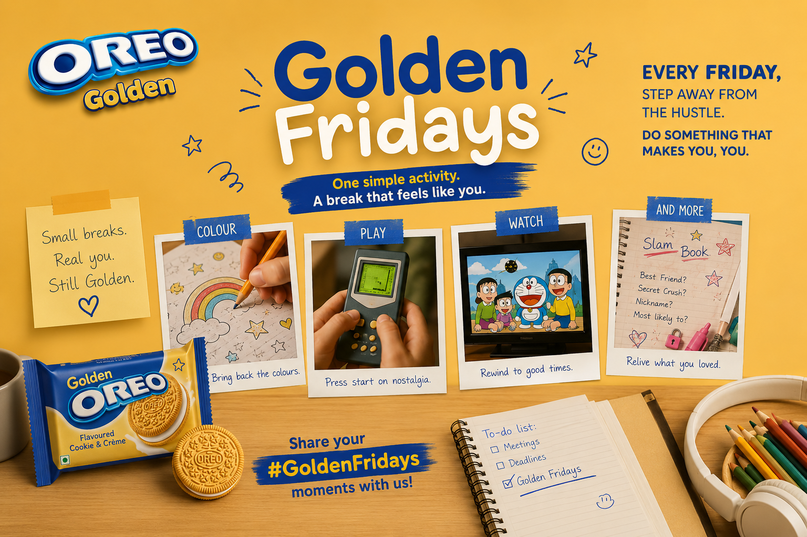
04 — Interactive brand experience
The Golden Oreo Report Card.
The campaign's main experiential piece. Oreo launches a microsite where users generate their own digital Inner Child Report Card by answering a short set of lifestyle questions. It mirrors an actual school report card but replaces academic subjects with playful behavioural categories.
To scale participation, Oreo sends customised report cards to creators and highly-engaged participants. It works as both a conversation driver and a shareable social post which is relatable, personalised and nostalgia-triggering, helping extend the campaign organically.
Try the live version →
THE GOLDEN OREO REPORT CARD
Date —
Spontaneous JoyB+
Doing Nothing ProductivelyC
Laughing For No ReasonA
Twisting Before LickingA+
Overall Inner Child GradeB+
05 — Physical brand presence
Nostalgia packaging & minimalist billboards.
Limited Edition Nostalgia Packaging — a series of limited-edition packs inspired by things common in the 2010s that have since lost their popularity.
Billboards — minimalist billboards recreate instantly recognisable moments from growing up, using only a visual cue and the Golden Oreo pack.
* Please note that this is a mock campaign, created as a portfolio exercise.
Content Strategy · Social Media · Instagram
Turban
Traditionalistic Urban — a luxury ethnic-wear brand. As Content Strategist & Social Media Manager, I turned a beautiful product into a brand people connect with.
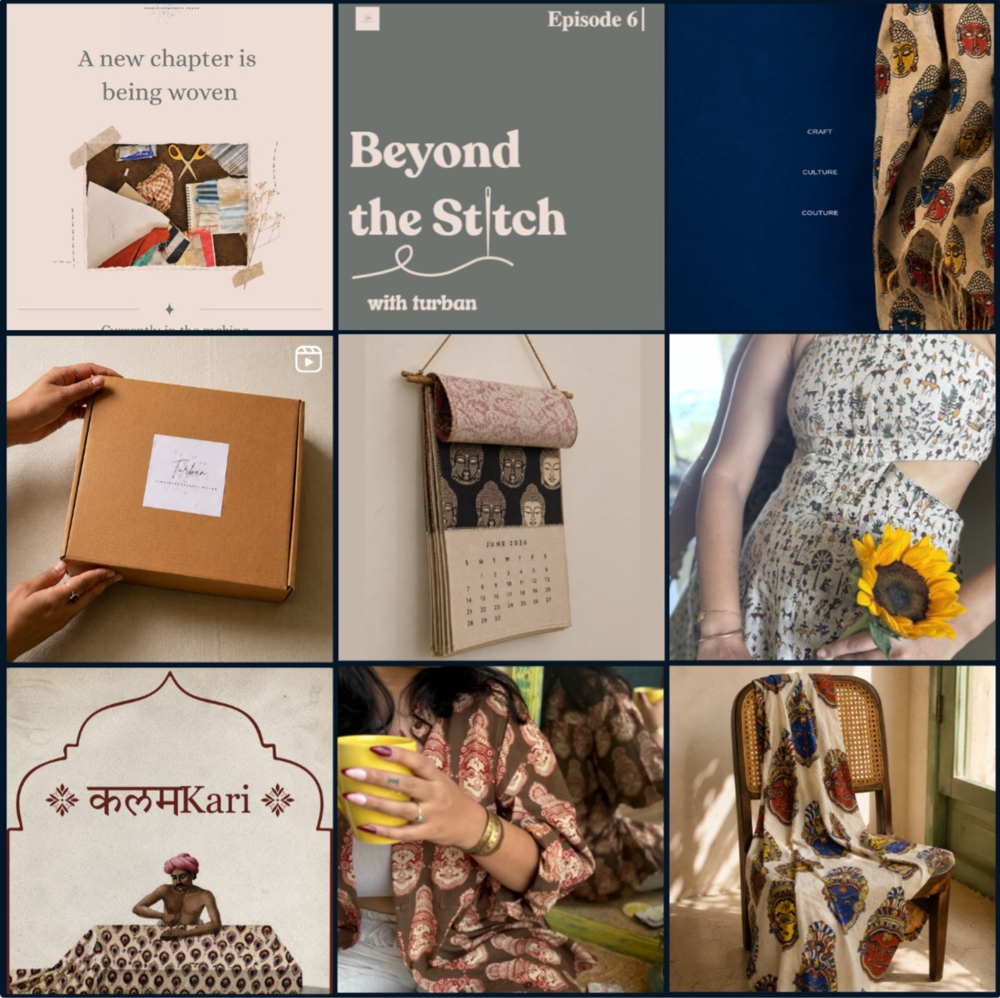
01 — The brief
A beautiful product the content wasn't doing justice.
Turban blends traditional Indian textile design with clean, urban silhouettes. Previous posts were repetitive and lacked a clear voice or strategy.
02 — The goal
An Instagram presence that feels intentional.
Attract the right audience (25–40, culture-conscious, quality-first, slow-fashion focused), tell the story behind every piece, and turn a beautiful product into a brand people genuinely connect with.
03 — The process
Start with the founder, then build the world.
Before touching a single post, I started with the founder — asked what she envisioned, presented different aesthetic directions (earthy luxury, desi maximalism, artisan storytelling) with reference brands for each. We landed on Indian Quiet Luxury — minimalist but not dull, culturally rooted, with intentional pops of colour. Then I built a feed inspiration board to translate that vision into a visual language the content could follow consistently.
04 — The future strategy
Series
Textile Dictionary
A KalamKari-style series where each product post tells a cultural story.
Community
UGC series
Bring real customers into the brand story.
Growth
Creator collabs
Culture-forward Instagram collabs once organic engagement benchmarks are met.
The vision
Build towards a cohesive brand narrative where every post, reel and story contributes to one consistent world.
Brand Analysis
Mokobara
They turned luggage into something people actually want to be seen with.
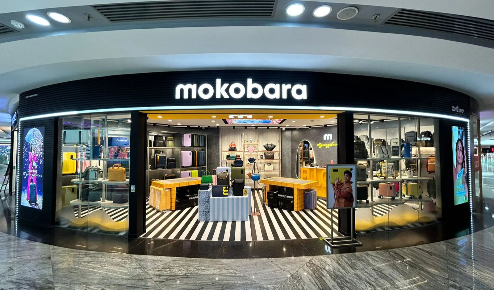
01 — The brand
Basic luggage, turned into something people want to be seen with.
Mokobara turned one of the most basic product categories in India — luggage — into something people actually want to be seen with. Founded in 2020, they spotted a gap nobody was filling: stylish, design-forward travel gear that didn't cost a fortune or look like every other bag. This resulted in a brand worth ₹700 crore that made Indians care about what they travel with.
02 — What they're getting right
They didn't sell bags. They sold movement.
Mokobara didn't sell bags — they sold the feeling of being someone who's always on the move, always going somewhere. #GoingPlaces isn't just a hashtag; it portrays their consumers as people who keep moving forward and exploring. And somehow a suitcase becomes part of that story.
The IndiGo × Mokobara collaboration was genuinely smart — 2kg extra luggage on IndiGo flights if you own a Mokobara suitcase. Not just co-branding for visibility, but a real functional benefit.
03 — What's unique
People buy the version of themselves that owns the thing.
What makes Mokobara genuinely different is that they understood something most product brands miss — people don't buy things, they buy the version of themselves that owns those things. Nobody needs a ₹15,000 suitcase. But they want to be the kind of person who has somewhere exciting to be and moves through the world with a little more style. Mokobara sold that identity so consistently that by the time you notice it, you already want the bag.
04 — Where I think there's room to grow
Own travel itself — not just the bag.
Honestly, the content is starting to feel a little familiar. What would take it to the next level is serialized storytelling — something like The Mokobara Diaries, where real travellers share where they went and why. The bag is in the frame; the story just needs to show up around it.
Another thing: own travel itself, not just the bag. Michelin became the world's most trusted food authority to give people a reason to drive more. Mokobara could do the same with a #GoingPlaces Guide written by real travellers — unexplored places, underrated routes. Nothing to do with luggage; everything to do with making you want to go somewhere. The bag sells itself after that.
The bigger picture
Mokobara became the brand that made a generation of Indians fall back in love with travelling. The product gets you in the door — but the culture they're building around movement, exploration and intentional living is what makes them truly unforgettable.They built a brand people actually care about in a category where that almost never happens.
Brand Analysis
Jacquemus
Every luxury brand tries to look untouchable. Simon decided to look fun, a little weird, and deeply human.
0
Age Simon started the brand — no degree, no money, no connections
0
Estimated revenue today (≈ €300–350M)
0
Search spike in a single day from the CGI clip
01 — The brand
Started at 19, named after his late mother.
Simon Porte Jacquemus started his brand at 19, named it after his mother who he had just lost — no degree, no money, no connections in the industry. He had his friends walk his clothes through Paris streets during Vogue's Fashion Night Out because he couldn't afford a show. That's where it started. Today the brand does an estimated €300–350 million in revenue. Their origin story explains everything about why they do what they do.
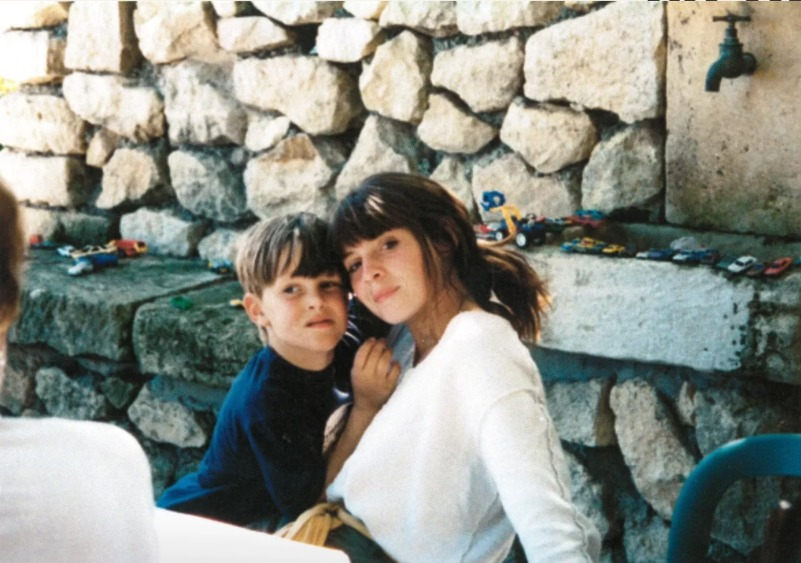
02 — What they're getting right
Fun is a legitimate luxury strategy.
Every other luxury brand is trying to look expensive and untouchable. Jacquemus decided to look fun, a little weird, and deeply human instead — and that makes people want their bags even more. The CGI bags-on-wheels campaign (2023) is my favourite: an 8-second Instagram clip of oversized Bambino bags cruising through Paris, completely unreal. Searches went up 900% in a single day. The Bambino sold out. That's a brand that genuinely knows who it is.
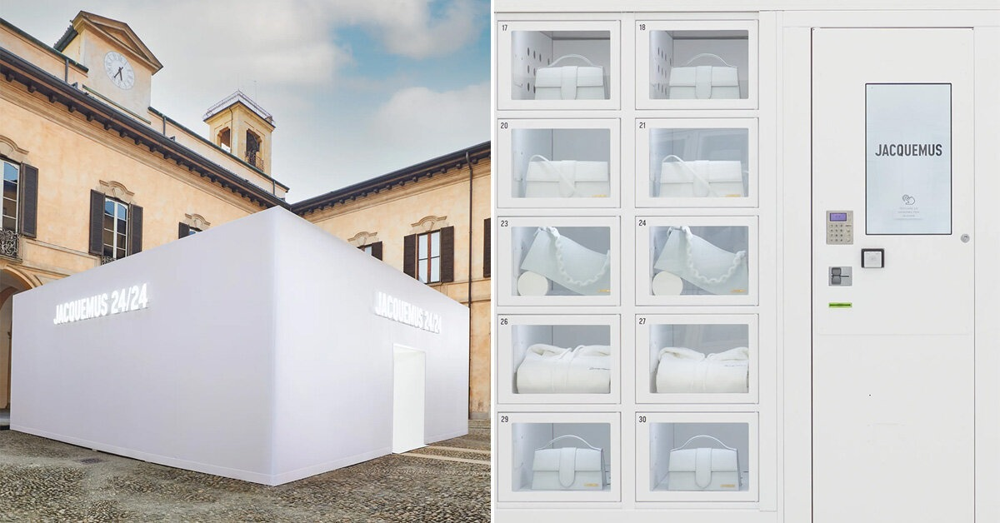
03 — What's unique
Simon doesn't market the brand. He is the brand.
What makes all of this work is Simon himself. He's not just a face the brand uses for marketing — he is the brand. His Provence childhood, his mother, his personal aesthetic — it's all in the DNA of every campaign and show. The blue-tiled pop-up was inspired by his own bathroom; the lavender-field show was his childhood backyard. Most brands try to manufacture authenticity. Jacquemus just has it, because Simon never separated himself from it.
04 — Where I think there's room to grow
Go deeper, not just bigger — build a community.
When your whole brand is built on surprise, the audience eventually starts actively looking forward to the next surprise. The hype is still working, but the next chapter for Jacquemus is going deeper, not just bigger. The one thing genuinely missing is a sense of community — millions love and follow the brand but there's no real place for them to belong. They're admirers, not insiders. There's an opportunity to build a space where the most passionate fans feel part of the world, not just watching from outside.
The bigger picture
What I appreciate most is that Simon basically proved that joy is a legitimate luxury strategy. In a category full of brands trying to look untouchable, he built something that makes you smile — and then charges luxury prices for it, and people pay happily. That's a completely different understanding of what desire actually feels like today.